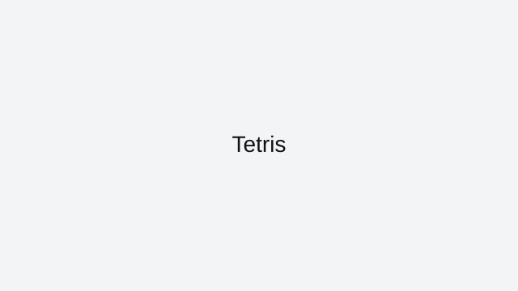

Tetris
Tetris is one of the cleanest strategy-action hybrids ever made. You balance survival and scoring at the same time, and both decisions happen every piece.
How to approach this game
Keep a flat stack, avoid deep gaps, and reserve one lane for long I-piece clears. Single and double clears are fine when pressure rises; forcing only Tetrises can end runs early if your board shape collapses.
Common mistakes to avoid
The biggest mistake is building uneven towers while waiting too long for one piece. Use hold and previews to plan, but prioritize board health over perfect scoring lines.
Who this game is best for
Tetris is ideal for players who like fast thinking, spatial planning, and measurable improvement over many sessions.
Why it stays in our curated index
Tetris stays in ArcadeZone's reviewed collection because it has a clear skill loop, reliable browser access, and enough real gameplay depth to justify written guidance. We do not keep indexed pages that only repeat generic descriptions or send users to thin external links.
Best session style for this game
Featured picks are chosen because they stay enjoyable even in quick sessions and still offer room to improve after the basics click.
Related reviewed games: 2048, Pac-Man, Snake.
ArcadeZone reviews this title for accessibility, control clarity, and replay value before keeping it in the curated index. Our goal is to help players choose the right game quickly, then improve through practical guidance instead of generic filler text.
What you'll love
- Curated review page with practical strategy guidance and clean navigation.
- Direct access to browser gameplay source with no installs required.
- Category fit: Featured gameplay style with related recommendations.
Game essentials
- Category: Featured
- Game type: Puzzle
- Page status: Indexed (reviewed)
- Play format: opens the original browser source in a new tab

How to play
Use the built-in browser controls shown by the game source and focus on timing plus positioning to improve consistency.
Tips & Tricks
- Keep a flat stack, avoid deep gaps, and reserve one lane for long I-piece clears. Single and double clears are fine when pressure rises; forcing only Tetrises can end runs early if your board shape collapses.
- The biggest mistake is building uneven towers while waiting too long for one piece. Use hold and previews to plan, but prioritize board health over perfect scoring lines.
- Practice in short sessions and track one improvement goal per run to build measurable progress.
Frequently asked questions
Do I need only Tetrises to play well?
No. Efficient singles and doubles are essential when your stack is unstable.
What causes most losses in Tetris?
Uneven stacks and waiting too long for one piece cause top-outs.
What should beginners practice first?
Board cleanliness, safe placements, and reading upcoming pieces.
Play
Use the verified source link below to launch the game in a new tab.
Open Tetris (external)Related games
More from ArcadeZone
Developer & Credits
ArcadeZone reviews Tetris for control clarity, replay value, and accessibility before listing it as curated content. We link to the original browser source and provide player-focused guidance on this page.